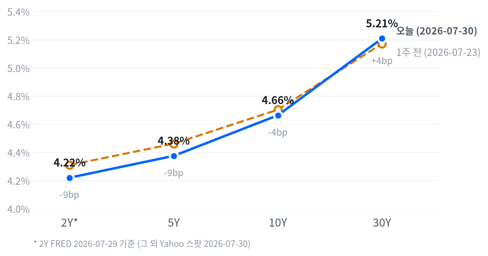

오늘 장을 관통한 동인은 두 개의 상반된 힘이었다. 마이크로소프트의 애저 클라우드 실적 서프라이즈(하루 시총 약 4,500억달러 증가, 개별 종목 사상 최대폭)가 나스닥·기술 섹터를 견인하며 전일 FOMC발 급락을 되돌렸고, 여기에 메모리·AI인프라주의 반등이 가세하며 위험선호가 되살아났다. 동시에 이날 오전 발표된 2분기 GDP 속보치가 컨센서스(2.1%)를 크게 밑돈 1.5%로 나오며 성장 둔화 우려가 지수 상단을 눌렀다.
크로스에셋 흐름은 부분적으로만 정합적이다. 위험선호를 반영하는 주식 랠리(나스닥 +2.78%)와 안전자산인 금의 강세(+3.25%)가 동시에 나타난 것은 이례적인데, 이는 GDP 미스에 따른 달러 약세(DXY -0.82%)와 중동 지정학 리스크·FOMC 매파 반대표에 따른 불확실성이 위험선호와 별개로 금 수요를 자극했기 때문으로 풀이된다.
채권시장에서도 2Y(-4.0bp)는 GDP 쇼크에 따른 인하 기대 회복을 반영해 하락한 반면 장기물(30Y +6.5bp)은 FOMC 매파 반대표發 인플레이션·재정 우려로 오히려 상승해, 단기·장기 구간이 서로 다른 이야기를 하고 있다.
다음 촉매는 이날 저녁 발표되는 아마존 실적이 첫 번째다. 마이크로소프트에 이어 하이퍼스케일러 자본지출 스토리를 재확인해줄지가 광학·AI인프라주 랠리의 지속 여부를 가른다. 두 번째는 7/31(금) BOJ 금리 결정으로, 이미 큰 폭 움직인 엔화 변동성을 더 키울 수 있는 이벤트다. 마지막으로 Bloomberg가 보도한 PCE 물가지표 발표가 30Y 금리의 다음 방향을 결정할 핵심 변수로 남아 있다.
| 지수 | 종가 | 등락 | 등락률 |
|---|---|---|---|
| S&P 500 Growth | 133.33 | +4.05 | +3.13% |
| Nasdaq | 25,122.18 | +679.24 | +2.78% |
| S&P 500 | 7,437.63 | +121.48 | +1.66% |
| Russell 2000 | 2,946.10 | +39.79 | +1.37% |
| Dow | 52,208.06 | +613.92 | +1.19% |
| S&P 500 Value | 232.16 | -0.20 | -0.09% |
| 섹터 | 종가 | 등락 | 등락률 |
|---|---|---|---|
| Technology | 175.73 | +9.16 | +5.50% |
| Industrials | 178.39 | +1.73 | +0.98% |
| Consumer Disc. | 112.39 | +0.78 | +0.70% |
| Financials | 57.00 | +0.32 | +0.56% |
| Energy | 58.96 | +0.31 | +0.53% |
| Materials | 51.64 | -0.10 | -0.19% |
| Utilities | 44.66 | -0.25 | -0.56% |
| Real Estate | 45.30 | -0.66 | -1.44% |
| Health Care | 163.52 | -2.72 | -1.64% |
| Consumer Staples | 85.47 | -1.89 | -2.16% |
| Comm. Services | 106.58 | -2.93 | -2.68% |
나스닥은 개장가(24,836.15) 대비 09:30 이른 시각 장중 저점(24,817.06, -0.08%)을 찍은 뒤 거의 되돌아설 틈 없이 우상향해 15:00에 장중 고점(25,170.69, 개장가 대비 +1.35%)을 형성했고, 종가는 25,122.18(+2.78%)로 6거래일 만에 하락세를 끊었다. 마이크로소프트가 전일 장 마감 후 발표한 애저 클라우드 실적 호조로 하루 만에 시가총액이 약 4,500억달러 불어나는 개별 종목 사상 최대 증가폭을 기록하며 대형 기술주 전반을 밀어올린 결과다(Yahoo Finance, Motley Fool).
S&P500과 러셀2000은 나스닥보다 늦고 깊은 조정을 거쳤다. S&P500은 11:00에 장중 저점(7,370.98, 개장가 대비 -0.26%)을, 러셀2000도 같은 시각 11:00에 저점(2,912.19, -0.61%)을 형성해 오전 내내 매도 압력이 이어졌다. 이날 오전 발표된 2분기 GDP 속보치가 컨센서스(2.1%)를 크게 밑돈 1.5%로 나오며 성장 둔화 우려가 지수 전반을 짓눌렀던 것으로 보인다.
오후 들어서는 세 지수 모두 낙폭을 되돌리며 장중 고점권에서 마감했다. S&P500은 15:00에 고점(7,448.75, +0.79%)을, 러셀2000은 15:30에 고점(2,948.41, +0.62%)을 각각 형성했다 — GDP 쇼크로 인한 오전 조정이 마이크로소프트발 실적 모멘텀과 이날 저녁 예정된 아마존 실적 기대감에 밀려 오후 매수세로 돌아선 패턴이다.
개별 종목에서는 엔비디아가 09:30에 저점(191.52달러, 개장가 대비 -1.00%)을 찍은 뒤 불과 한 시간 만인 10:30에 고점(197.25달러, +1.96%)까지 반등했다가 다시 밀려 종가는 195.04달러(+2.65%)로 마쳤다. 장중 변동폭에 비해 최종 상승폭이 절반가량에 그친 셈으로, AI 반도체 저가매수세가 개장 직후 일찍 유입됐다가 오후엔 다소 식은 흐름을 보여줬다.
S&P500 Growth(+3.13%)와 Value(-0.09%)의 등락률 격차가 3.22%포인트에 달해 오늘 장은 전형적인 성장주 쏠림 하루였다. 마이크로소프트발 대형 기술주 랠리와 메모리·AI인프라주의 두 자릿수 폭등이 성장 스타일 전체를 밀어올린 반면, 밸류·방어 성격의 종목군은 사실상 보합에 머물렀다.
섹터별로는 기술(+5.50%)이 압도적 1위를 차지했고, 커뮤니케이션서비스(-2.68%)·필수소비재(-2.16%)·헬스케어(-1.64%) 등 방어 섹터가 동반 약세를 보이며 기술 쏠림의 반대편에 섰다. 위험선호가 기술주 한 곳에 극단적으로 집중된 로테이션이었던 셈이다.
포지셔닝 관점에서는 이날 저녁 발표되는 아마존 실적이 이 쏠림의 지속 여부를 가를 다음 확인 트리거다. 실적이 마이크로소프트에 이어 하이퍼스케일러 자본지출 스토리를 재확인해주면 기술 쏠림이 이어질 여지가 크지만, GDP 미스가 반복 확인될 경우 성장주 밸류에이션 부담이 부각될 수 있어 익스포저를 단계적으로 점검할 필요가 있다.
| 만기 | 07-30 종가 | 전일比(bp) | 1주 전 | 주간 변화(bp) |
|---|---|---|---|---|
| 2Y* | 4.22% | -4.0bp | 4.31% | -9.0bp |
| 5Y | 4.375% | +2.3bp | 4.461% | -8.6bp |
| 10Y | 4.663% | +4.1bp | 4.703% | -4.0bp |
| 30Y | 5.208% | +6.5bp | 5.171% | +3.7bp |

2Y*(FRED 2026-07-29)·5Y·10Y·30Y(Yahoo 2026-07-30) 국채금리 커브 — 별표(*) 표기된 2Y는 스팟 지수가 없어 하루 이상 뒤진 기준일의 FRED 값임에 유의. 1주 전 대비 2Y·5Y는 각각 9.0bp·8.6bp 하락한 반면 30Y는 3.7bp 상승해 장기 구간이 저항선을 형성했다.
당일(07-30) 기준 5s30s 스프레드는 83.3bp로, 1주 전(07-23 Yahoo 동일자 기준 71.0bp)보다 12.3bp 벌어졌다. 30Y가 5.208%로 2007년 7월 이후 최고치에 근접한 반면 5Y는 오히려 4.375%까지 내려오면서 장기 구간에서 뚜렷한 스티프닝이 진행됐다.
2s10s 스프레드는 44.3bp(2Y FRED 07-29 vs 10Y Yahoo 07-30 기준)로, 같은 날짜로 맞춘 FRED 동일자 기준(45.0bp)과 0.7bp밖에 차이 나지 않아 두 기준 사이 괴리는 크지 않다. 다만 1주 전 2s10s(2Y·10Y 각각의 week_ago 값 기준 약 39.3bp)와 비교하면 한 주간 5bp가량 벌어져, 여기서도 스티프닝 방향이 확인된다 — 단 2Y 다리는 만기가 하루 이상 밀린 값이라는 점에서 이 비교를 하루 단위 변화로 해석해서는 안 된다.
전일 대비로는 2Y(FRED, -4.0bp)만 하락했고 5Y·10Y·30Y(Yahoo)는 나란히 올랐는데 특히 30Y(+6.5bp)의 상승폭이 가장 컸다. 이는 연구노트에 정리된 7/29 FOMC 매파적 반대표 3인(해맥·카시카리·로건)과 장기 인플레이션·재정 프리미엄 우려가 장기물에 집중적으로 반영된 결과로 풀이되며, 반대로 2Y는 7/30 오전 GDP 속보치 쇼크(1.5%, 컨센서스 2.1%)로 단기 인하 기대가 되살아나며 하락했다.
포지셔닝 관점에서는 30Y가 2007년 이후 최고 수준까지 올라온 만큼 장기 듀레이션 확대는 아직 이르다고 판단한다. 벨리~단기 구간(2Y·5Y) 중심의 숏~중립 듀레이션을 유지하되, 다음 주 예정된 PCE 물가지표(Bloomberg 보도 기준)에서 인플레이션 재점화가 확인되면 장기물 비중을 추가로 줄이는 손절 기준으로, 반대로 30Y가 5.20% 아래로 안정되면 장기물 재진입을 검토하는 확인 트리거로 삼을 만하다.
| 통화쌍 | 종가 | 등락 | 등락률 |
|---|---|---|---|
| DXY | 99.97 | -0.83 | -0.82% |
| USD/KRW | 1,421.43 | -31.73 | -2.18% |
| USD/JPY | 159.73 | -4.14 | -2.52% |
| EUR/USD | 1.1530 | +0.0143 | +1.26% |
엔화는 이번 리서치 창에서 가장 극적인 장중 움직임을 보인 자산이다. USD/JPY는 08:30에 장중 고점(163.739)을 찍은 뒤 뉴욕 오후 15:00까지 저점(157.923, 개장가 대비 -3.34%)까지 미끄러졌다가 소폭 되돌려 종가 159.73(전일比 -2.52%)으로 마감했다. 일본 당국의 시장개입 정황이 짙다는 보도가 다수 나왔고(Reuters/Investing.com, Yahoo Finance), 7/31 BOJ 금리 결정을 하루 앞두고 거래량이 평소보다 크게 늘며 엔 캐리트레이드 청산 우려가 부각됐다.
DXY(-0.82%)는 GDP 서프라이즈 미스와 맞물려 달러 전반의 약세를 뒷받침했고, 이 흐름은 유로(EUR/USD +1.26%)·원화(USD/KRW -2.18%, 원화 강세) 동반 강세로 이어졌다. 엔화의 급격한 강세는 순수한 달러 약세보다 일본 정책 개입 요인이 더 크게 작용한 결과로, 다른 통화들의 완만한 달러 약세와는 결이 다르다.
엔화 변동성이 이례적으로 큰 만큼 BOJ 결정(7/31) 전까지는 방향성 베팅보다 변동성 관리에 무게를 두는 편이 합리적이며, 원화·유로는 달러 약세 기조에 편승한 순환매 성격이 강해 GDP·FedWatch 재가격 흐름을 함께 확인할 필요가 있다.
| 품목 | 종가 | 등락 | 등락률 |
|---|---|---|---|
| Gold | $4,166.00 | +131.30 | +3.25% |
| Natural Gas | $2.747 | +0.022 | +0.81% |
| WTI | $84.26 | -0.20 | -0.24% |
| Brent | $89.45 | -1.29 | -1.42% |
최대 변동 품목은 금(+3.25%)이다. 금은 새벽 01:30 장중 저점(4,085.00달러, 개장가 대비 -0.75%)을 찍은 뒤 오전 10:00 고점(4,180.20달러, +1.56%)까지 상승폭을 키웠고, 종가는 4,166.00달러(전일比 +3.25%)로 마감했다. 개장가(4,115.90달러) 자체가 이미 전일 종가 대비 갭업 출발했는데, 중동 정세 불안과 FOMC 동결 결정이 겹치며 안전자산 수요를 자극했다는 평가다(Yahoo Finance, Bullion Trading LLC 종합 보도).
WTI는 새벽 03:30에 장중 고점(85.94달러, 개장가 대비 +2.74%)을 먼저 찍은 뒤 오전 09:00에 저점(82.97달러, -0.81%)까지 미끄러졌고, 종가는 84.26달러(전일比 -0.24%)로 소폭 하락 마감했다 — 고점이 저점보다 먼저 나타나는 흐름으로, 장 초반 강세가 이어지지 못하고 되돌림에 그친 하루였다. 브렌트(-1.42%)도 같은 방향으로 하락한 반면 천연가스(+0.81%)는 나 홀로 완만한 상승을 보였다.
금과 원유가 반대 방향으로 움직인 점이 눈에 띈다. 달러 약세(DXY -0.82%)와 중동·FOMC발 안전자산 수요는 금을 밀어올렸지만, 정작 지정학 리스크의 진앙인 원유는 오히려 하락해 유가 재상승 리스크가 아직 가격에 완전히 반영되지 않았을 가능성을 시사한다.
| 자산군 | 판단 | 근거 |
|---|---|---|
| 주식 | 선별적 리스크온 | 마이크로소프트발 대형 기술주 랠리와 메모리·AI인프라 반등이 지수를 견인했으나 Growth·Value 격차(3.22%p)가 극단적이었던 만큼 아마존 실적 확인 전까지 기술 쏠림 비중을 단계적으로 관리 |
| 채권 | 벨리~단기 중심, 장기물 신중 | 30Y가 2007년 이후 최고치 근접(5.208%)까지 오르며 5s30s가 한 주간 12.3bp 벌어져 스티프닝 진행 중, PCE 물가지표 확인 전까지 장기 듀레이션 확대는 보류 |
| FX | 엔화 변동성 관리, 달러 약세 순응 | USD/JPY가 장중 -3.34%까지 급락해 일본 당국 개입 정황이 짙은 만큼 BOJ 결정(7/31) 전까지 방향성 베팅보다 변동성 관리 우선, 원화·유로는 달러 약세 순환매 편승 |
| 원자재 | 금 비중 유지, 유가 관망 | 금은 안전자산 수요와 달러 약세가 겹쳐 강세를 이어간 반면 원유는 지정학 리스크의 진앙임에도 하락해 방향이 엇갈림, 유가 재상승 리스크를 낮게 가격 반영한 구간 |
| 메모리 | 반등 국면, 단계적 비중확대 | 마이크론·웨스턴디지털·시게이트가 두 자릿수 급등하며 최근 약세장 진입 이후 첫 반등을 보였으나 SK하이닉스·삼성전자는 같은 날 하락해 미국·아시아 메모리주 간 온도차 확인 필요 |
| AI 인프라 | 아마존 실적 확인 후 확대 | 룩센텀·마벨·코히런트가 두 자릿수 동반 랠리를 보였는데 이는 이날 저녁 아마존 실적 기대감이 선반영된 결과인 만큼 실적 발표 이후 하이퍼스케일러 캐펙스 가이던스로 재확인 필요 |
아마존 실적 실망: 이날 저녁 발표되는 아마존 실적·가이던스가 마이크로소프트만큼 강하지 못하면 광학·AI인프라주 랠리가 하루 만에 되돌려지고 나스닥도 상승분 일부를 반납할 수 있다.
성장 둔화 확인: GDP 속보치 미스(1.5%)가 일회성에 그치지 않고 다음 PCE·ISM 지표에서도 반복 확인되면, 오늘 형성된 기술주 랠리가 밸류에이션 부담 속에 되돌림을 겪을 수 있다.
엔 캐리 청산 확산: BOJ가 7/31 예상보다 매파적 결정을 내리면 이미 급변동한 엔화가 추가로 강세를 보이며 캐리트레이드 청산이 다른 위험자산으로 전이될 소지가 있다.
마이크로소프트발 대형 기술주 랠리 (Technology 섹터 +5.50%, Nasdaq +2.78%) — 전일 장 마감 후 발표된 애저 클라우드 실적 호조로 마이크로소프트 시가총액이 하루 만에 약 4,500억달러 불어나며 개별 종목 사상 최대 증가폭을 기록, 나스닥의 6거래일 연속 하락을 끊었다(Yahoo Finance, Motley Fool).
메모리 섹터 반등 (마이크론 +18.36%, 웨스턴디지털 +15.37%, 시게이트 +11.41%) — 삼성전자의 메모리 공급 타이트닝 경고가 AI向 수요 대비 공급 부족 기대를 자극하며 급락 이후 반등을 이끌었다. 다만 같은 날 SK하이닉스(-5.64%)·삼성전자(-0.72%)는 하락해 미국·아시아 메모리주 간 방향이 엇갈렸다(24/7 Wall St., Yahoo Finance).
AI 인프라·광학 섹터 (룩센텀 +15.09%, 마벨 +12.18%, 코히런트 +12.16%) — 마이크로소프트 실적 호조와 이날 저녁 예정된 아마존 실적 발표를 앞두고 하이퍼스케일러 자본지출 기대가 재부각되며 반등했다(TradingView/Invezz).
| 종목 | 종가 | 등락 | 등락률 |
|---|---|---|---|
| Micron | $874.66 | +135.66 | +18.36% |
| Western Digital | $533.04 | +71.00 | +15.37% |
| Seagate | $851.68 | +87.25 | +11.41% |
| Nvidia | $195.04 | +5.03 | +2.65% |
| Samsung Elec | ₩207,000 | -1,500 | -0.72% |
| SK hynix | ₩1,322,000 | -79,000 | -5.64% |
메모리·스토리지 섹션 전반이 두 자릿수 급등하며 "Memory Stocks Blast Off"라는 제목의 기사가 다수 확인된다. 랠리의 핵심 촉매는 삼성전자의 메모리 공급 타이트닝 경고로, AI向 메모리 수요 대비 공급이 빠듯해지며 제조사들의 가격 결정력이 강화될 것이라는 기대가 확산됐다는 해석이다(24/7 Wall St., Yahoo Finance).
다만 이번 랠리는 그 직전까지 이어진 급락에 대한 반등(reversal) 성격이 강하다. 삼성전자·SK하이닉스는 2분기 합산 영업이익 약 150조원(약 1,040억달러)이라는 사상 최대 실적을 냈음에도 최근 고점 대비 20% 이상 급락하며 "메모리 트레이드가 약세장에 진입했다"는 보도가 나왔을 정도로 밸류에이션 부담 우려가 컸다(Yahoo Finance). 필라델피아 반도체지수(SOX)도 고점 대비 -20%로 약세장에 진입했다는 보도가 있어, 7/30 급등 이전 낙폭이 상당했음을 시사한다(Eastern Herald).
7/30 당일 기준으로는 미국·서구 메모리주(마이크론 +18.36%, 웨스턴디지털 +15.37%, 시게이트 +11.41%)와 달리 아시아 메모리 대형주(SK하이닉스 -5.64%, 삼성전자 -0.72%)는 오히려 하락해 지역별 온도차가 뚜렷했다. 개별 촉매를 특정하기는 어려우나, 미국 상장 메모리주는 저가매수세 유입이 두드러졌던 반면 아시아 대형주는 직전 낙폭에 대한 조정이 이어졌을 가능성이 있다.
단기 변동성이 극심한 국면인 만큼 D램 수요·AI 투자 확대라는 구조적 스토리 자체는 유효하되, 낙폭이 상대적으로 작았던 종목부터 단계적으로 비중을 확대하고 SK하이닉스·삼성전자의 방향 전환 여부를 먼저 확인하는 편이 합리적이다.
| 종목 | 분야 | 종가 | 등락 | 등락률 |
|---|---|---|---|---|
| Lumentum | 광통신 부품 | $693.24 | +90.89 | +15.09% |
| Marvell | 반도체/데이터센터 커넥티비티 | $183.30 | +19.90 | +12.18% |
| Coherent | 광통신 부품 | $249.06 | +27.01 | +12.16% |
| GE Vernova | 전력 인프라/터빈 | $981.98 | +81.70 | +9.07% |
| Vertiv | 데이터센터 냉각/전력관리 | $227.50 | +4.46 | +2.00% |
룩센텀(+15.09%)·마벨(+12.18%)·코히런트(+12.16%)가 두 자릿수 동반 랠리를 기록하며 AI 데이터센터 밸류체인(커스텀 ASIC/네트워킹, 광학) 전반이 강하게 반등했다. 마이크로소프트 실적 호조와 이날 저녁 예정된 아마존 실적 발표를 앞두고 하이퍼스케일러 자본지출 기대가 재부각된 결과로 보인다(TradingView/Invezz).
코히런트·룩센텀 등 광학 부품주는 최근 몇 주간 AI 자본지출 지속 가능성에 대한 의구심으로 급락과 급등을 반복하는 높은 변동성을 보여왔다. Stifel은 룩센텀·셀레스티카·코히런트를 알파벳/하이퍼스케일러 자본지출 노출도가 가장 큰 하드웨어 업체로 지목한 바 있다(Yahoo Finance).
GE 버노바(+9.07%)·버티브(+2.00%) 등 데이터센터 전력·냉각 인프라주도 동반 상승했으나 상승폭은 광학·반도체 그룹보다 작았다. 버티브는 시장 전반의 완만한 상승률과 유사한 흐름을 보이며 상대적으로 덜 변동적이었다.
투자 관점에서는 오늘의 반등이 마이크로소프트 실적 하나에 크게 의존한 만큼, 이날 저녁 아마존 실적에서 하이퍼스케일러 캐펙스 가이던스가 재확인돼야 랠리의 지속성을 판단할 수 있다. 종목별 변동성 편차가 큰 구간인 만큼 수주잔고·가이던스 추세가 뒷받침되는 종목을 선별할 필요가 있다.
| 지표 | Actual | Forecast | Previous | 발표일/기준 | 판정 |
|---|---|---|---|---|---|
| Initial Jobless Claims (07-25주) | 197K | 201K | 188K | 2026-07-30 | 하회▼ |
| Continuing Jobless Claims (07-18주) | 1,782K | ≈1,800K | 1,789K | 2026-07-30 | 하회▼ |
| Initial Claims 4주 이동평균 | 202.75K | — | 207.75K | 2026-07-30(claims 동시 발표) | — |
| JOLTS 구인건수 | 7,594K | — | 7,585K | 기준월: 2026-05 | — |
| Nonfarm Payrolls (전월비) | +57K | — | +129K | 기준월: 2026-06(07-03 발표) | — |
| 실업률 | 4.2% | — | 4.3% | 기준월: 2026-06(07-03 발표) | — |
| 시간당 평균임금 MoM | +0.35% | — | +0.27% | 기준월: 2026-06(07-03 발표) | — |
| 지표 | Actual | Forecast | Previous | 발표일/기준 | 판정 |
|---|---|---|---|---|---|
| 실질GDP 성장률 (연율, 2Q26 속보치) | +1.5% | +2.1% | +2.1%(1Q26) | 2026-07-30(BEA 속보치) | 하회▼ |
| 산업생산 MoM | +0.08% | — | +0.14% | 기준월: 2026-06 | — |
| 내구재수주 MoM | +0.32% | — | -4.04% | 기준월: 2026-06 | — |
| 신규주택판매 | 628K | — | 618K | 기준월: 2026-06 | — |
| 기존주택판매 | 4.09M | — | 4.19M | 기준월: 2026-06 | — |
| 지표 | Actual | Forecast | Previous | 발표일/기준 | 판정 |
|---|---|---|---|---|---|
| CB 소비자신뢰지수 | 90.8 | 92.3~92.4 | ≈92.2 | 2026-07-28 | 하회▼ |
| 소매판매 MoM | +0.22% | — | +1.02% | 기준월: 2026-06 | — |
| 미시간대 소비자심리지수 | 44.8 | — | 49.8 | 기준월: 2026-05 | — |
| 지표 | Actual | Forecast | Previous | 발표일/기준 | 판정 |
|---|---|---|---|---|---|
| CPI YoY | 3.73% | — | 4.27% | 기준월: 2026-06 | — |
| CPI MoM | -0.42% | — | +0.47% | 기준월: 2026-06 | — |
| Core CPI YoY | 2.81% | — | 2.96% | 기준월: 2026-06 | — |
| Core CPI MoM | -0.02% | — | +0.21% | 기준월: 2026-06 | — |
| PPI 최종수요 MoM | -0.28% | — | +0.62% | 기준월: 2026-06 | — |
| PCE 물가지수 YoY | 3.67% | — | 4.08% | 기준월: 2026-06 | — |
| Core PCE YoY | 3.29% | — | 3.42% | 기준월: 2026-06 | — |
| 미시간대 1년 기대인플레 | 4.8% | — | 4.7% | 기준월: 2026-05 | — |
2분기 GDP 속보치(+1.5%)가 컨센서스(+2.1%)를 크게 밑돌고 신규실업수당청구(197K)도 전주(188K)보다 늘었지만 컨센서스(201K)보다는 적어, "성장은 둔화되나 고용은 아직 견조하다"는 조합이 확인됐다. 같은 날 CB 소비자신뢰지수(90.8)도 컨센서스(92.3~92.4)를 밑돌며 소비 심리 약화가 겹쳤다.
CME FedWatch는 이번 주 사이 크게 출렁였다. FOMC 직전(7/28) 9월 인하 확률은 54.4%였으나 7/29 기자회견 직후 매파 반대표 3인(해맥·카시카리·로건) 영향으로 9월 인상 확률이 순간 60.1%까지 치솟았다는 보도가 있었다. 7/30 오전 GDP·claims 발표 이후 인상 베팅이 되돌려지고 인하 기대가 재부각됐다는 것이 시장 논평의 대체적 흐름이나, 데이터 발표 이후 갱신된 정확한 FedWatch 수치는 확인되지 않는다.
채권시장은 단기물(2Y -4.0bp)이 GDP 미스에 곧바로 반응해 하락한 반면 장기물(30Y +6.5bp)은 FOMC 매파 반대표發 인플레이션·재정 우려를 계속 반영하며 상승해, 만기별로 서로 다른 이야기를 하고 있다. 주식시장은 매크로 서프라이즈보다 마이크로소프트 개별 실적이 하루의 방향을 더 크게 좌우했다.
심리(선행)축은 악화 쪽으로 기울었다. CB 소비자신뢰지수(90.8)가 컨센서스(92.3~92.4)를 밑돌며 소비자 심리가 예상보다 약했고, 이번 주는 ISM·S&P Global PMI 등 다른 선행 서베이 발표가 없어(다음 발표 8/1~8/5) 선행축 판단이 소비 심리 서베이 한 축에 크게 의존하는 한계가 있다.
활동(중행)축은 뚜렷하게 악화됐다. 2분기 GDP 속보치가 +1.5%로 컨센서스(+2.1%)와 직전 분기(+2.1%)를 모두 큰 폭 밑돌아 성장 둔화가 확인됐다. 지난달 발표된 산업생산(+0.08%, 전월 +0.14%)·기존주택판매(4.09M, 전월 4.19M)도 함께 둔화된 흐름이어서, 심리축의 소비자신뢰지수 하락과 방향이 일치한다.
성적표(후행)축은 혼조다. 신규실업수당청구는 197K로 전주(188K)보다 늘었지만 컨센서스(201K)보다는 낮아 노동시장이 아직 급격히 무너지지는 않았음을 보여준다. 반면 인플레이션 지표(6월 기준 CPI YoY 3.73%, Core PCE YoY 3.29%)는 전월 대비 오히려 냉각돼, 활동축의 성장 둔화와 후행축의 물가 안정이 같은 방향(디스인플레이션 지속)을 가리키는 가운데 고용만 상대적으로 완만한 둔화에 그치는 비대칭이 나타난다.
기본 시나리오는 성장 둔화와 물가 냉각이 동시에 진행되는 연착륙 경로다. GDP 미스와 CB 소비자신뢰지수 하락이 활동·심리축에서 둔화를 확인시켜준 반면, CPI·Core PCE YoY가 이미 6월 기준 3%대 중반까지 낮아진 만큼 연준이 다음 회의부터 인하를 재개할 여지가 있다는 것이 시장 컨센서스에 가깝다.
대안 시나리오는 미시간대 1년 기대인플레이션(4.8%, 전월 4.7%)의 완만한 재상승과 30Y 국채금리의 2007년 이후 최고치 근접이 시사하듯, 장기 인플레이션·재정 프리미엄이 예상보다 끈적하게 남아 연준의 인하 재개가 지연되는 경로다. 이 경우 FOMC 매파 반대표 3인의 논리가 다시 힘을 받을 수 있다.
시나리오를 가를 핵심 일정은 7/31(금) BOJ 금리 결정, Bloomberg가 보도한 다음 PCE 물가지표 발표, 그리고 8/1 ISM 제조업 지수다. 자산배분 관점에서는 두 시나리오 모두에서 장기 듀레이션 채권 확대는 PCE 확인 전까지 보류하고, 성장주 익스포저는 아마존 실적 등 개별 이벤트로 재확인하며 단계적으로 조정하는 편이 합리적이다.